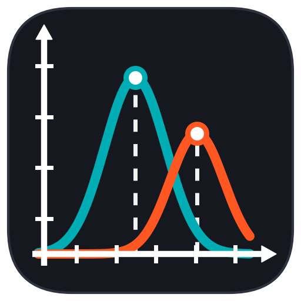

FDV App Icon (Bold / High-Visibility)
Expanded across the squircle, thick line weights, colored ring apex nodes, and text-free for taskbar clarity.

Simulated Taskbar & Titlebar Scale:
48x48 (Window)
32x32 (Taskbar)
24x24 (Titlebar)
16x16 (Tray)